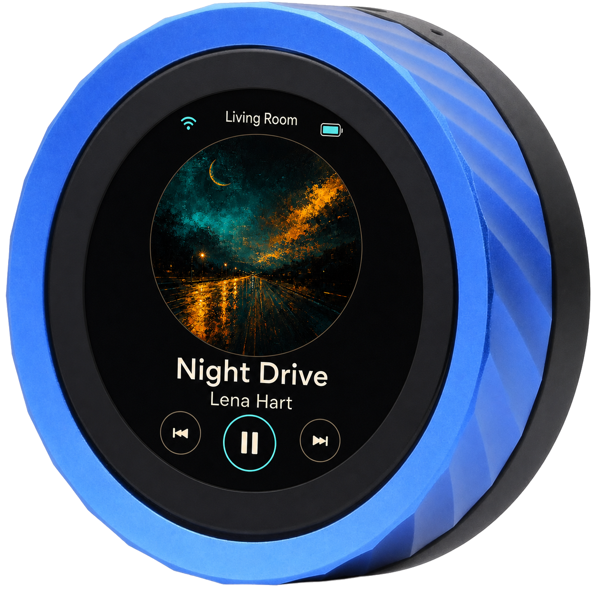
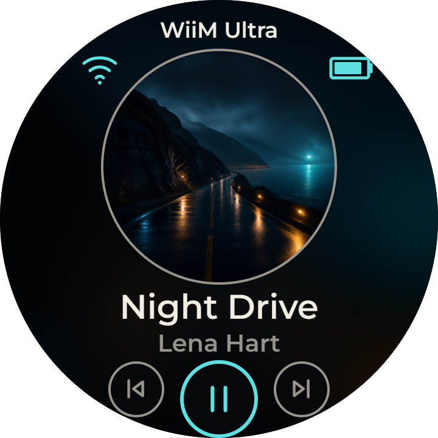
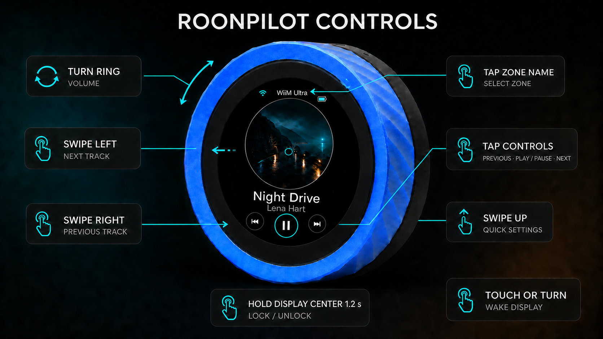
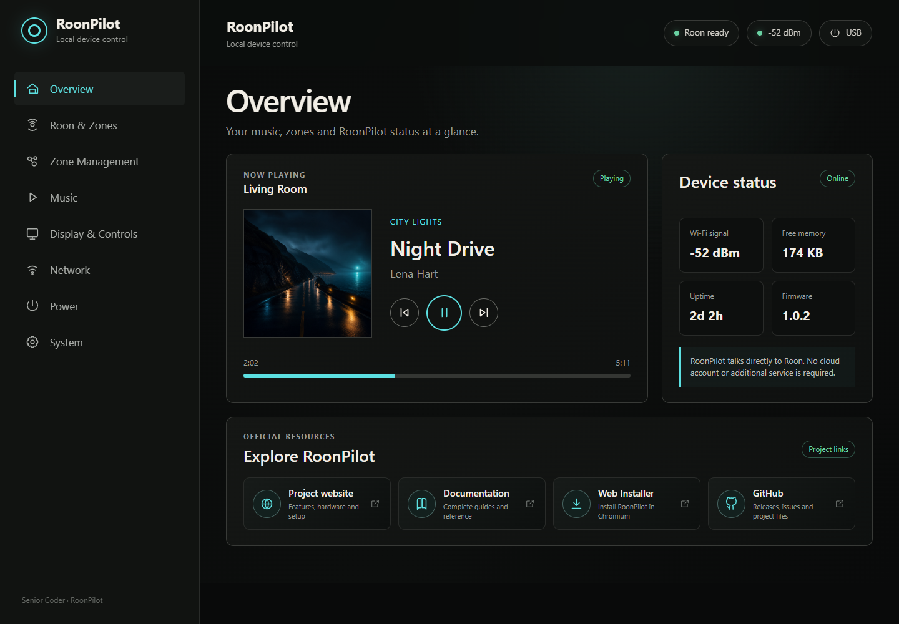

ESP32-S3
RoonPilot, display, touch, rotary ring and Wi-Fi. This is the only processor written by the Web Installer.
A fast, tactile Roon remote for the Waveshare ESP32-S3 Knob Touch LCD 1.8. No bridge, companion app or additional service required.
Two independently programmable ESPs are inside. Identify the ESP32-S3 before any erase or flash.
The USB-C plug orientation selects which independent processor is connected. Firmware for one processor must never be written to the other.
RoonPilot, display, touch, rotary ring and Wi-Fi. This is the only processor written by the Web Installer.
Separate companion processor. Its optional low-power firmware requires its own 4 MB backup and manual installation.
esptool chip-id before every erase or flash. Stop immediately if the reported chip does not match the file.
01
Four checks prevent nearly every avoidable flashing problem.
A charge-only cable can power the display but cannot transfer firmware.
Save the complete 16 MB ESP32-S3 flash and the complete 4 MB companion flash before changing either chip.
Close serial tools, find the port and run python -m esptool --port COMx chip-id.
Factory, OTA and companion images have different targets and cannot substitute for one another.
02
Complete the safety-critical steps before starting any installation.
Chromium browser required for browser installation. Use a current desktop Chrome, Edge, Chromium, Brave or Opera with Web Serial. Firefox and Safari cannot run it.
Factory means complete erase. Installation removes the current ESP32-S3 firmware, Wi-Fi credentials, Roon authorization and all settings. Back up the original 16 MB flash first.
Later updates are easier. After the first installation, use RoonPilot's local System → Firmware update → Check for updates page. Signed online A/B updates normally preserve settings.
Browser: current desktop Chromium with Web Serial only. Factory install: completely erases the ESP32-S3. Close ESP-IDF Monitor, PuTTY, Arduino Serial Monitor and every other program holding the COM port before starting.
03
Always verify the filename, target chip and published SHA-256 value.
ESP32-S3 · 0x0ErasedInactive A/B slotPreservedClassic ESP32 · 0x0Separate flashIt disables the unused DAC path and places the second ESP32 into indefinite deep sleep. It does not add Roon functionality and is never installed by the ESP32-S3 Web Installer.
Manual operation · classic ESP32 only
Before you continue: RoonPilot works without this optional image. Install it only after the original 4 MB companion flash has been read, verified and copied to a second safe location.
Use Windows PowerShell with Python 3.10 or newer and Espressif esptool.
py -m pip install --upgrade esptoolDisconnect USB, rotate the USB-C plug 180 degrees and reconnect. Check the new port.
py -m esptool --port COM4 chip-idContinue only when it reports a classic ESP32, never ESP32-S3.
Read the complete original companion flash and keep its SHA-256 checksum in two safe locations.
py -m esptool --chip esp32 --port COM4 read-flash 0x0 0x400000 companion-original-4mb.binCheck the published checksum, then write the companion file at address 0x0. Do not use the S3 Factory or OTA image.
py -m esptool --chip esp32 --port COM4 --baud 460800 write-flash 0x0 roonpilot-companion-sleep-factory-v1.0.0.binDisconnect USB, rotate the plug back, reconnect and confirm that chip-id now reports ESP32-S3.
Replace COM4 with the port shown by your operating system. Close every serial monitor before running a command. The complete guide also explains download verification, exact backup sizes, recovery and restoring the original 4 MB image.
04
A clean factory image contains no private Wi-Fi or Roon data.
Connect to RoonPilot-Setup-XXXXXX. If the captive page does not open, visit 192.168.4.1.
Select or enter your 2.4 GHz network and save the password locally on the device.
Use the address shown by your router or the device. No Internet account is required.
In Roon, open Settings → Extensions and enable RoonPilot by Senior Coder.
If several Roon Servers are found, choose the intended one. A fixed local IP can be entered when discovery is blocked.
Select the primary zone and hide rooms that should not appear on the device.
05
Fast physical control, a considered round interface and complete local configuration.

Turn the full outer ring for volume. Tap, swipe or hold the capacitive display for playback and device controls.
Turn · tap · swipe · hold
Volume, transport, zone selection, Quick Settings, control lock and wake-up are available directly on the device.
Read the complete device controls
Open image at full size
The responsive local interface manages RoonPilot directly from the same network.

RoonPilot talks directly to Roon on your local network. Configuration, pairing and control remain local.
06
RoonPilot targets the Waveshare ESP32-S3-Knob-Touch-LCD-1.8, not a generic round ESP32 display.
Blue and black enclosure variants are sold with or without an included battery. Check the exact order code and regional battery restrictions before purchasing.
Waveshare product page Official technical wiki07
Start with the hardware guide and factory backups before installing anything.
Use BOOT/RESET only when automatic USB connection fails. Never rotate the plug and flash the second processor as a troubleshooting guess.